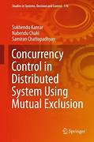
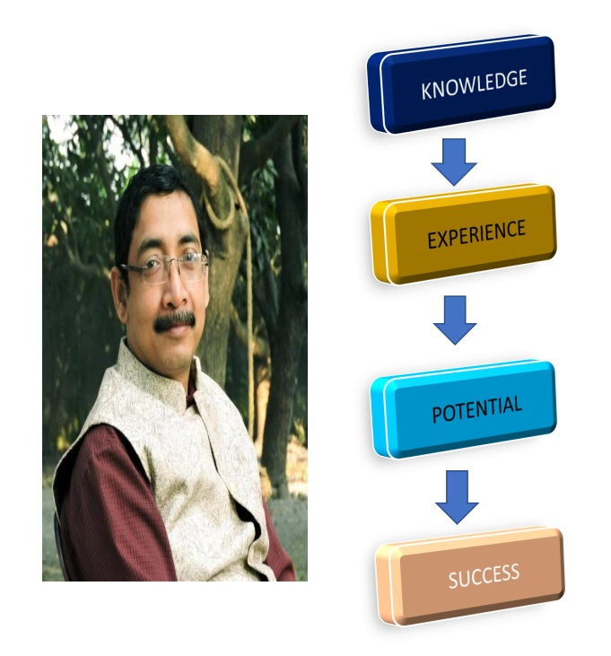

About Us
|
Sukhendu Kanrar is a distinguished academician with a robust educational background in the field of Computer Science and Mathematics. He holds a B.Sc. in Mathematics (Hons.), a B.Ed., and an MCA (Master of Computer Applications), demonstrating a strong foundation in both theoretical and applied sciences. Additionally, he has completed his M.E. (Master of Engineering), followed by a Ph.D. in his specialized area of research. He has also pursued a Post Graduate Diploma in Public Management & Services (PGDPMS), further enhancing his leadership and management skills. Dr. Kanrar is currently serving in the Department of Computer Science at Narasinha Dutt College and is affiliated with PTT (presumably another institution or position) as well as Shree Agrasain College. His academic journey reflects his passion for both teaching and research, and he has made significant contributions to the fields of mathematics and computer science. Dr. Kanrar is dedicated to shaping the next generation of scholars and professionals through his expertise in technology, management, and education. Sukhendu Kanrar is currently pursuing a successful career in mutual fund management and trading, leveraging his strong analytical background and experience in finance. With a solid foundation in mathematics, computer science, and management, he applies data-driven strategies to navigate financial markets. His expertise spans investment planning, portfolio management, and trading, helping clients achieve their financial goals with well-informed, strategic decisions. Dr. Kanrar’s unique combination of technical and financial knowledge positions him as a trusted professional in the evolving world of finance. |
 |
Why join us?
Our Services
Investment Advisory Services
Offering personalized investment advice and strategies based on individual risk tolerance, financial goals, and market conditions. Helping clients choose the right investment vehicles (stocks, bonds, mutual funds, ETFs) based on their financial situation.
Financial Education and Workshops
Offering educational resources to help individuals become more informed about personal finance, trading, and investing.
Mutual Fund and ETF Distribution
Educating clients on mutual funds and exchange-traded funds (ETFs) as investment options, helping them choose funds that align with their financial goals. Assisting with the selection, purchase, and management of mutual funds and ETFs for long-term growth.
Classes
|
Dr. Sukhendu Kanrar, a seasoned expert in mutual fund trading, now offers comprehensive online classes designed to help individuals master the art of investing in mutual funds. With years of experience in the financial markets, Dr. Kanrar brings practical insights and proven strategies to each session, tailored for both beginners and advanced learners. His classes cover everything from understanding market trends to advanced trading techniques, empowering participants to make informed decisions and achieve financial growth. Join Dr. Kanrar’s online course to gain the skills and confidence needed for successful mutual fund trading from the comfort of your home. Nowdays online classes are going on every Saturday and Sunday from 8.30pm.
|
 |
Contact Us
 Phone
Phone
+91 9831932385
 Email
Email
@sukhen2003
 Facebook
Facebook
Sukhendu Kanrar
 Instagram
Instagram
dr_sukhendu_kanrar
 Youtube
Youtube
Dr.SK Academy